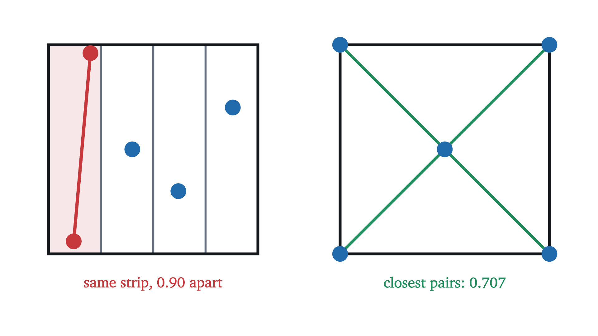
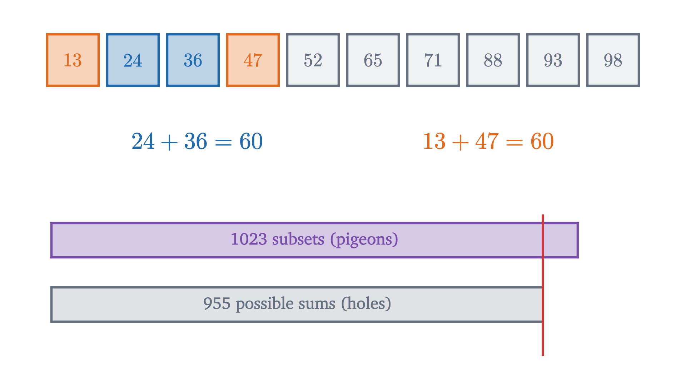
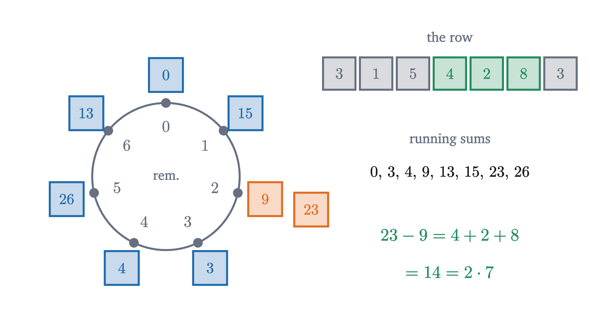
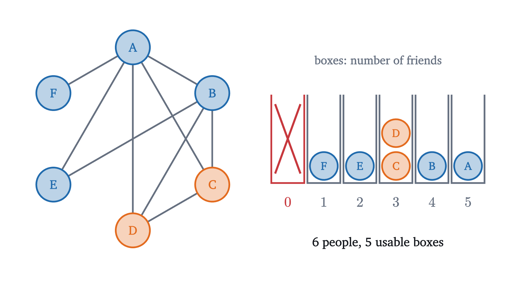

The pigeonhole principle: obvious, and surprisingly strong
More objects than boxes forces two into one box. We prove the principle and its general form, then use it on problems where finding the boxes is the hard part.
Are there two people in London with exactly the same number of hairs on their heads? It sounds like a question that would need a census with tweezers. It can be settled from an armchair, and the answer is yes, with certainty.
A human head has around 100,000 hairs, and nobody has as many as a million. London has about nine million inhabitants. Give every possible hair count from 0 to 999,999 its own box, and ask each Londoner to stand in the box for their count. There are a million boxes and nine million people, so the people cannot all have a box to themselves. Two people in the same box have the same number of hairs.
The argument found no such pair and counted nobody’s hair. It used one idea, that more objects than boxes forces a box to be shared. This is the pigeonhole principle. Its statement is so plain that it is hard to believe it can prove anything interesting, and the purpose of what follows is to show that it can.
The principle and why it is true
Try it by hand first. Put 4 pigeons into 3 boxes while keeping every pigeon alone. The first three pigeons can take a box each, and then the fourth has nowhere to go. Said without reference to any order of arrival: if each of the 3 boxes held at most one pigeon, the boxes would hold at most 3 pigeons in total, and there are 4.
In the language of functions, with objects as inputs and boxes as outputs: if $A$ and $B$ are finite sets and $A$ has more elements than $B$, then every function $f$ from $A$ to $B$ sends two different elements of $A$ to the same element of $B$. The hair argument uses the function “number of hairs” from the set of Londoners to the set $\{0, 1, \dots, 999{,}999\}$.
Pause and try
The nine million Londoners and one million boxes are far from the borderline case of the theorem. Can you guarantee more than two people with the same hair count? How many?
Show answerHide answer
If every box held at most 8 people, the boxes would hold at most $8 \times 1{,}000{,}000 = 8$ million people, and there are 9 million. So some box holds at least 9 people: nine Londoners with exactly the same number of hairs.
More pigeons: the general form
The exercise used a stronger version of the principle. Here it is as a process. Take 22 objects in 5 boxes, distributed unevenly, and try to make the fullest box as empty as possible by moving objects out of it.
The fullest box stops at 5. It cannot reach 4, because five boxes holding at most 4 each would hold at most 20 objects. The fullest box is always at least as full as the average box, and since it holds a whole number of objects, at least the average rounded up. For a real number $x$, write $\lceil x \rceil$ for the least integer that is greater than or equal to $x$, so $\lceil 4.4 \rceil = 5$ and $\lceil 9 \rceil = 9$.
When $N > n$ the quotient $N/n$ exceeds 1, so $\lceil N/n \rceil \ge 2$ and we recover the first theorem. For London, $\lceil 9{,}000{,}000 / 1{,}000{,}000 \rceil = 9$. The mirror image is also true, by the same proof with the inequalities reversed: some box contains at most $N/n$ rounded down.
Pause and try
How many people must be in a room to guarantee that at least three of them were born in the same month?
Show answerHide answer
The boxes are the 12 months. With 24 people it is possible that each month has exactly two, so 24 is not enough. With 25 people some month has at least $\lceil 25/12 \rceil = 3$. The answer is 25. In general, to force $k$ objects into one of $n$ boxes you need $n(k-1) + 1$ objects.
Choosing the holes: five points in a square
Here is a problem with no boxes in sight. Mark any five points in a square of side 1. I claim that some two of them are at most $\frac{\sqrt2}{2} \approx 0.707$ apart, wherever you put them.
The objects are surely the five points. For the principle to apply we need four boxes, and they must be chosen so that two points in the same box are forced to be close.
Pause and try
Find a way to divide the unit square into four regions so that any two points in the same region are at most $\frac{\sqrt2}{2}$ apart. Check your regions against the worst case: the two points of a region that are farthest from each other.
Show answerHide answer
Cut the square into four quarter squares of side $\frac12$. The farthest-apart points of a quarter are opposite corners, at distance $\sqrt{\left(\frac12\right)^2 + \left(\frac12\right)^2} = \frac{\sqrt2}{2}$.
Two questions test whether the result could be improved. Is 0.707 the best bound, and are five points needed? The right half of the next figure answers the first: the four corners and the center are five points with no pair closer than $\frac{\sqrt2}{2}$, so no smaller number can be guaranteed. The four corners alone are 1 apart or more, so with four points the claim is false.
The left half shows why the choice of holes mattered. Four vertical strips are also four regions, and the pigeonhole principle applies to them just as well: two of the five points share a strip. But that conclusion is worthless here, because a strip is tall.

Holes that are not places
In the square the holes were regions, which at least look like boxes. In number problems the holes are usually classes of numbers, and finding the right classes is the whole difficulty.
Choose six numbers from $1, 2, \dots, 10$. I claim that one of your numbers divides another. Five numbers are not enough to force this, since none of 6, 7, 8, 9, 10 divides another. To prove the claim we need five holes such that two numbers in the same hole always have one dividing the other. Grouping by size, or into odd and even, does nothing of the kind.
The chains are found by pulling out factors of 2. Every positive integer can be written in exactly one way as $2^e \cdot m$ with $m$ odd and $e \ge 0$; call $m$ its odd part. The numbers $12 = 2^2 \cdot 3$ and $6 = 2 \cdot 3$ have the same odd part, 3. The general result is the following.
The number $n + 1$ cannot be lowered: the $n$ numbers $n + 1, n + 2, \dots, 2n$ contain no such pair, since twice the smallest of them already exceeds $2n$.
Worked examples
In the next three problems the objects, the holes or both are not what first comes to mind.



What the principle does not say
The conclusion of the pigeonhole principle is an existence statement, and that is all it is. It does not say which box is shared or which two objects share it. The hair argument proves that the nine Londoners exist and offers no help in finding them. The subset example guarantees two subsets with equal sums, and to exhibit them for a given set of ten numbers you still have to search.
The hypothesis is strict. With exactly $n$ objects in $n$ boxes nothing is forced, since each object can have its own box, and the party example showed how to deal with such a near miss. The principle is also a statement about finite sets. An infinite set of objects can be placed one per box into what looks like a smaller collection of boxes: send each positive integer $k$ to the even number $2k$, and all the positive integers have been stored in the even-numbered boxes alone, with no sharing.
Stepping back
Nothing here was hard to prove once the objects and the holes were named. The proofs were three or four lines long. What took thought was the naming: quarter squares in place of strips, odd parts, subsets in place of numbers, running sums in place of terms, and a count of friends with one value struck out. When a problem asks you to show that among enough things two must be alike in some way, try to describe “alike” as “in the same class”, and count the classes.
The principle belongs to a family of arguments that prove existence by counting or averaging, with no construction. Its relatives turn up in the birthday problem, where the question changes from “when is a shared box certain?” to “when is it likely?”, and in the probabilistic method, which proves that an object exists by showing that a random one has a positive chance of working.
Check yourself
A drawer contains 10 red socks, 10 blue socks and 10 black socks. You pull out socks in the dark. How many must you pull out to be certain of having two of the same color?
Problems
Problems 1 to 3 apply the principle directly. In problems 4 to 7 you must find the holes. Problem 8 is harder.
Problem 1
A drawer holds many red, blue and black socks. (a) How many socks must you take to be sure of three of the same color? (b) Among 100 people, at least how many must share a birth month?
Show solutionHide solution
(a) The boxes are the 3 colors. Six socks can be two of each color, so 6 is not enough. Seven socks give some color at least $\lceil 7/3 \rceil = 3$. The answer is 7, which is $n(k-1)+1$ with $n = 3$, $k = 3$. (b) With 12 months as boxes, some month contains at least $\lceil 100/12 \rceil = \lceil 8.33\ldots \rceil = 9$ people. Eight is not enough to account for everyone, since $12 \cdot 8 = 96 < 100$. Ten cannot be guaranteed, because four months with 9 people and eight months with 8 make $36 + 64 = 100$.
Problem 2
How many people must be gathered to be certain that two of them have the same birthday (day and month)? Why is the answer not 366?
Show solutionHide solution
The boxes are the possible birthdays, and counting 29 February there are 366 of them. With 366 people it is possible, if unlikely, that all birthdays differ. With 367 people two must coincide. So the answer is 367.
Problem 3
Show that among any 6 integers there are two whose difference is divisible by 5.
Show solutionHide solution
Let the holes be the five possible remainders on division by 5, namely 0, 1, 2, 3, 4, and put each integer in the hole of its remainder. Six integers in five holes gives two integers $a$ and $b$ with the same remainder $r$: $a = 5q + r$ and $b = 5q' + r$. Then $a - b = 5(q - q')$ is divisible by 5.
Problem 4
Five points are marked in an equilateral triangle of side 2 (the boundary is allowed). Show that two of them are at distance at most 1.
Show solutionHide solution
Join the midpoints of the three sides. This cuts the triangle into four equilateral triangles of side 1, three at the corners and one in the middle. Assign each point to a small triangle that contains it. Five points and four small triangles put two points in the same small triangle. Two points of an equilateral triangle of side 1 are at distance at most 1, because the farthest-apart points of a triangle are two of its vertices. (Reason: fix one point $P$. Along any line, the distance from $P$ decreases up to the foot of the perpendicular from $P$ and increases after it, so on a segment it is largest at one of the two ends. Every point of the triangle lies on a segment from a vertex to a point of the opposite side, and that point lies on a segment between two vertices. So the point of the triangle farthest from $P$ is a vertex, and the same argument with that vertex fixed moves $P$ to a vertex too.)
Problem 5
A lattice point is a point of the plane whose two coordinates are integers. Show that among any five lattice points there are two whose midpoint is also a lattice point.
Show solutionHide solution
The midpoint of $(x_1, y_1)$ and $(x_2, y_2)$ is $\left(\frac{x_1 + x_2}{2}, \frac{y_1 + y_2}{2}\right)$, which is a lattice point exactly when $x_1 + x_2$ and $y_1 + y_2$ are both even, that is, when $x_1$ and $x_2$ are both even or both odd, and likewise $y_1$ and $y_2$. So let the holes be the four parity patterns of a point: (even, even), (even, odd), (odd, even), (odd, odd). Five points in four holes give two points with the same pattern, and their midpoint is a lattice point. Four points do not suffice: $(0,0), (0,1), (1,0), (1,1)$ have all patterns different.
Problem 6
Show that among any $n + 1$ integers chosen from $\{1, 2, \dots, 2n\}$ there are two with no common factor greater than 1. Show that $n$ chosen integers are not enough.
Show solutionHide solution
Let the holes be the $n$ pairs $\{1, 2\}, \{3, 4\}, \dots, \{2n-1, 2n\}$. Each of the numbers lies in exactly one pair, so $n + 1$ chosen numbers include both members of some pair, say $k$ and $k + 1$. A common factor of $k$ and $k + 1$ divides their difference, which is 1, so their only common factor is 1. For the second part, choose the $n$ even numbers $2, 4, \dots, 2n$: every two of them have the common factor 2.
Problem 7
Explain why the decimal expansion of a fraction $\frac{p}{q}$, with $p$ and $q$ positive integers and $q \ge 2$, eventually repeats, and why the repeating block has at most $q - 1$ digits. Illustrate with $\frac17$.
Show solutionHide solution
Carry out the long division of $p$ by $q$. After the decimal point, each step takes the current remainder $r$, a number from $0$ to $q - 1$, appends a zero to form $10r$, writes the quotient digit of $10r$ divided by $q$, and keeps the new remainder. The next digit and the next remainder depend only on the current remainder. If a remainder is 0 the expansion terminates, which is a repeating block of zeros. Otherwise every remainder is one of the $q - 1$ values $1, \dots, q - 1$, so among the first $q$ remainders two are equal. From the second occurrence on, the division repeats exactly what it did after the first. The length of the repeating block is the gap between the two occurrences, at most $q - 1$. For $\frac17$ the remainders are $1, 3, 2, 6, 4, 5$ and then $1$ again, giving $\frac17 = 0.142857\,142857\ldots$ with a block of 6 digits, the maximum for $q = 7$.
Problem 8
Show that any list of 10 different real numbers contains four terms, not necessarily adjacent but in their original order, that are increasing, or four that are decreasing. (For instance $5, 9, 1, 7, 3, 8, 2, 10, 4, 6$ contains $5, 7, 8, 10$.)
Show solutionHide solution
Suppose, for contradiction, that some list $x_1, \dots, x_{10}$ has no increasing and no decreasing run of four terms. For each position $k$, let $u_k$ be the length of the longest increasing run that ends at $x_k$, and $d_k$ the length of the longest decreasing run that ends at $x_k$. By the supposition both are 1, 2 or 3, so the pair $(u_k, d_k)$ is one of $3 \times 3 = 9$ possibilities. These are the holes, and the 10 positions are the pigeons. So two positions $i < j$ have $(u_i, d_i) = (u_j, d_j)$. The numbers are different, so either $x_i < x_j$ or $x_i > x_j$. If $x_i < x_j$, take an increasing run of length $u_i$ ending at $x_i$ and append $x_j$: this is an increasing run of length $u_i + 1$ ending at $x_j$, so $u_j \ge u_i + 1$, contradicting $u_j = u_i$. If $x_i > x_j$, the same argument with decreasing runs gives $d_j \ge d_i + 1$, again a contradiction. So the supposition is false. The same proof shows that $n^2 + 1$ different numbers contain a run of length $n + 1$ in one direction or the other, a theorem of Erdős and Szekeres from 1935.